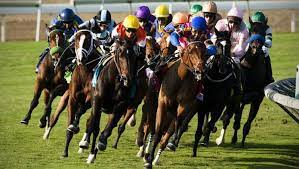
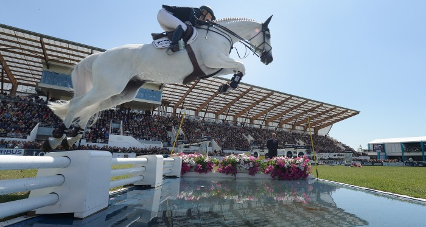

| Nome do esporte |
Caracteristicas |
imagem |
| Doma clássica ou adestramento |
O cavalo deve conseguir executar perfeitamente movimentos como, passage, pirueta e caprioli. Esses são os parâmetros introdutórios da prática de equitação formam a base para a prática e competição na doma clássica. |
 |
| Corrida a Galope ou Corrida Hípica |
Hoje em dia, a forma do esporte mais popular é o turfe, praticado conforme sua origem na Inglaterra durante o século XVII. Até mesmo o termo turfe vem de “Turf”, que era a palavra usada para designar as corridas de cavalo na Inglaterra.
Nesta modalidade de esporte equestre é comum que os espectadores das corridas possam apostar em seu cavalo favorito.
Na corrida a galope os competidores conjuntos formados por um cavalo e um cavaleiro ou “jóquei”. A competição se dá em pistas preparadas especialmente, em hipódromos. |
 |
| Polo com Cavalos |
O Polo é o único do esportes com cavalos que, em alguns aspectos, até lembra o futebol.
O esporte é praticado com duas equipes com quatro cavalos montados cada, dois atacantes, um meio-campo e um defensor. O objetivo é marcar gols por meio de guiar uma bola, feita de madeira ou plástico, até a baliza usando tacos de bambu da Índia.
As partidas de polo equestre duram, geralmente, menos de uma hora para terminar. Ela é dividida em períodos conhecidos como Chukkas, que duram cerca de 7 minutos e meio. A equipe vencedora num jogo de polo equestre é a que tiver marcado mais gols ao fim do último chukka.
Os jogadores precisam trocar de baliza a cada gol marcado, para evitar que condições geográficas possam favorecer um time em específico. Os cavalos precisam ser trocados a cada um dos chukkas, e cada cavalo só pode ser utilizado duas vezes por jogo. |
 |
| Salto |
O salto é dos esportes mais exigentes e ao mesmo tempo divertidos de todo o hipismo.
Nele, o conjunto formado entre cavaleiro ou amazona e cavalo devem percorrer todo o percurso no menor tempo possível. Ou pelo menos o mais próximo possível do tempo ideal estabelecido para a competição.
Mas isso não é tudo, o conjunto deve transpor uma série de obstáculos ao longo de uma pista feita de grama ou areia.
Ao todo, o conjunto deve transpor um total de 10 a 15 obstáculos. Esses obstáculos são:
- Cerca
- Quádruplo
- Tríplice
- Duplo
- Muro
- Oxer
- Triplo
- Cerca
- Fosso de Água
- Paralelas
|
 |